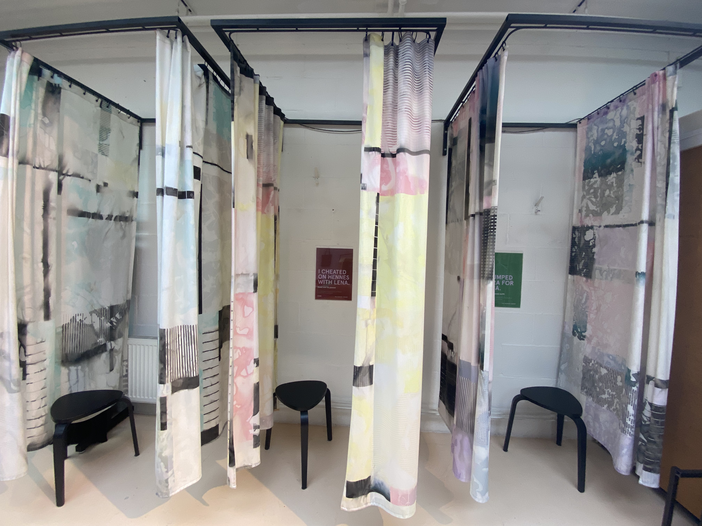
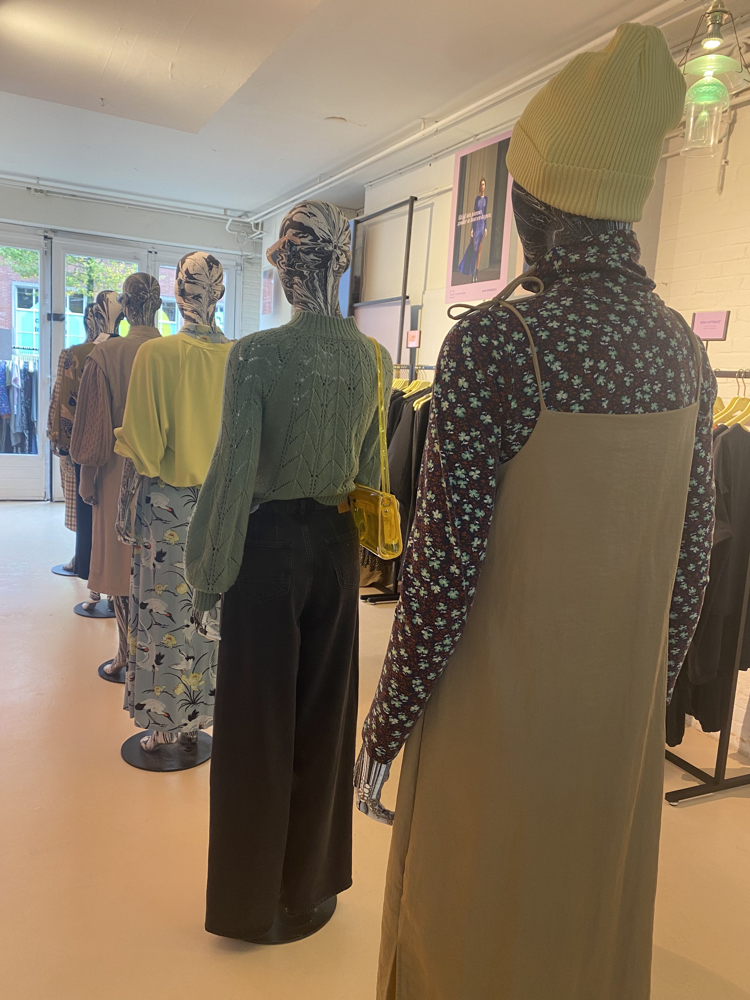

Waarom kleding lenen?
Altijd een nieuwe outfit, zonder de last van overconsumptie en een groeiende ecologische voetafdruk. Dat is waar LENA the fashion library voor staat. En hier zijn een paar goede redenen waarom ook jij zou moeten meedoen:
Altijd een nieuwe outfit Het gevoel van iets nieuws in je kledingkast zonder alles te hoeven kopen. Bij LENA heb je toegang tot een eindeloze rotatie van stijlen, zodat je er altijd fris en trendy uitziet.
Goed voor de paneet
Door kleding te delen, hoeven we minder grondstoffen te gebruiken. Je kunt dus zovaak shoppen als je wilt zonder negatieve footprint achter te laten. Zo draag je bij aan een duurzamere toekomst voor onze planeet.
Experimenteren met je stijl
Bij LENA kun je heel makkelijk iets uitproberen wat je normaal niet zou kopen. Ontdek nieuwe stijlen, kleuren en patronen zonder een grote investering te doen.
Try before you buy
je wel eens of een kledingstuk echt bij je past? Bij LENA kun je kleding uitproberen voordat je het koopt. Zo voorkom je miskopen en maak je bewuste keuzes die bij jou en je stijl passen.
Dit betekent nog niet dat LENA helemaal tegen kopen is. Het gaat er om dat het wat bewuster kan. Je kunt de kleding dus ook gewoon kopen. Ook als je niet dichtbij woont kun je meedoen!